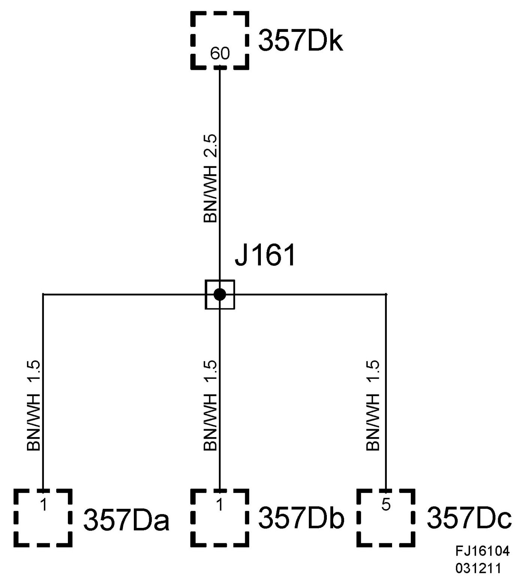
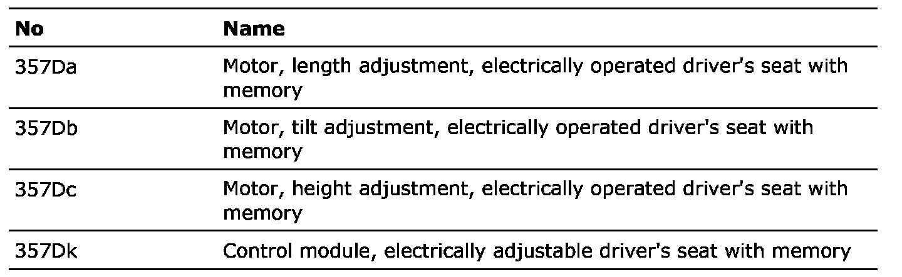
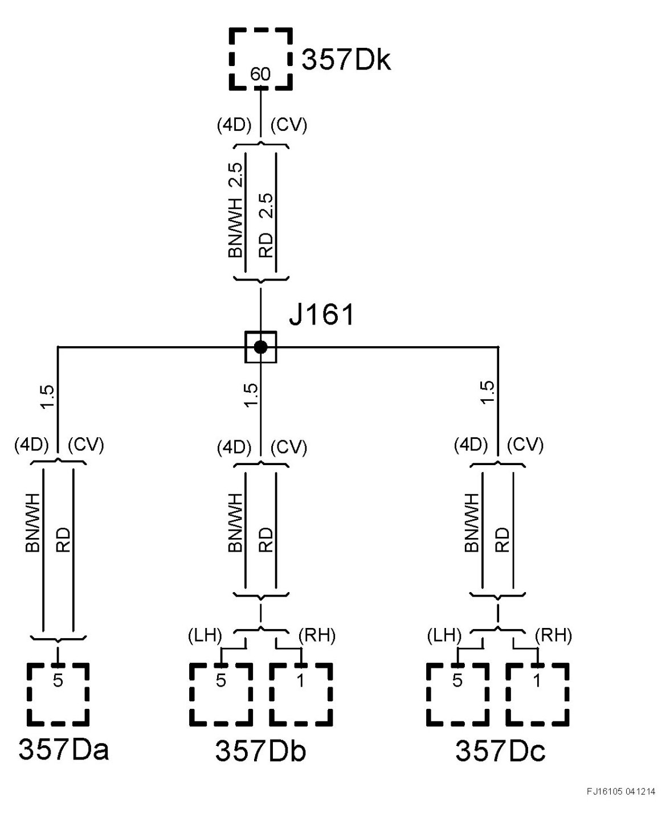

Crimp J161, Seat Harness
Crimp J161, Seat Harness
Location: Approx. 95 mm from branching point motor 375b towards seat switch
Electrically adjustable seat with memory function 4D/5D

List of components

Electrically adjustable seat with memory function CV
Location
LH: Approx. 10 mm from branching point length adjustment motor towards seat switch
RH: Approx. 150 mm from branching point control module towards switch unit

List of components